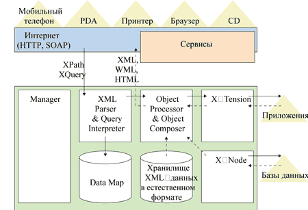
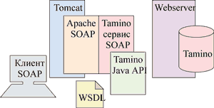

Андрей Колесов
Сегодня вряд ли кого-то нужно убеждать в значимости стандартов XML для развития корпоративных информационных систем. Именно XML отводится сегодня решающая роль в решении задач интеграции данных и приложений как внутри предприятий, так и при взаимодействии с внешними субъектами. Однако проблема заключается в том, что между XML и реляционной моделью, которую поддерживают практически все СУБД, существуют фундаментальные различия (см. таблицу). В результате, хотя практически все реляционные и объектно-реляционные базы данных сегодня поддерживают XML, в них все же сложно обеспечить эффективное использование всех возможностей этого стандарта. Например, для работы с XML-данными разработчики вынуждены использовать собственные расширения SQL, а не стандарты XML.
Основные различия в хранении XML-данных в XML- и реляционных базах данных
| Данные в формате XML | Нормализованные реляционные данные |
| Данные находятся в единой иерархической структуре | Данные распределены по нескольким таблицам |
| Значения могут содержаться в элементах и/или атрибутах | Значения хранятся в ячейках таблиц |
| Элементы упорядочены | Упорядочение достигается за счет специального индексирования |
| Элементы могут быть рекурсивными | Слабая поддержка рекурсии |
| Схема не обязательна | Схема строго обязательна |
| Сохранение и извлечение XML-документов выполняется напрямую | Для извлечения и сохранения XML-документов требуются дополнительные операции преобразования данных |
| Запросы в соответствии со стандартами XML | Запросы на языке SQL, приспособленном к XML |
Альтернативный подход заключается в том, чтобы создать СУБД, изначально ориентированную на хранение и поиск данных в формате XML. Именно такой подход применила компания Software AG в своем продукте Tamino XML Server, реализующем модель хранения и обработки данных в соответствии со стандартами XML:
- XML-документ является, как правило, фундаментальной единицей хранения; ·
- DTD (document type definition) или XML-схемы используются как "язык определения данных" для описания свойств коллекций документов; ·
- языки запросов XML (например, Xpath) используются для поиска документов; ·
- клиентские приложения могут обрабатывать XML-данные с помощью SAX, DOM, XSTL и других стандартов на самом ядре сервера, а не посредством внешних утилит.
С практической точки зрения обе стратегии - реляционные СУБД с поддержкой XML и XML-ориентированные СУБД - имеют свою нишу. Первый вариант принято применять для доступа к существующим системам обработки данных, а второй - для обработки документов, изначально создаваемых в XML-формате. Однако, учитывая современные тенденции развития информационных систем, можно утверждать, что специализированные XML-серверы оптимальным образом подходят для решения задач интеграции гетерогенных приложений, выступая в роли виртуальных СУБД и управляя данными в формате XML, хранимыми в различных источниках информации.
Tamino XML Server - это продукт, предназначенный для хранения, обслуживания, публикации и обмена документами в формате XML. Более того, совместно с интеграционным сервером EntireX и другими продуктами Software AG он представляет собой полную платформу для построения основанных на XML систем масштаба предприятий.
Общая схема архитектуры Tamino представлена на рис. 1. Физически сервер состоит из набора сервисов, в котором выделяется два уровня - базовый (ядро) и вспомогательный. Сервисы ядра - это неотъемлемая часть Tamino, они доступны сразу после установки продукта. Вспомогательные сервисы включают средства и инструменты для эффективной разработки решений на базе Tamino. Их состав может расширяться за счет продуктов независимых разработчиков.
|  |
| Рис. 1. Архитектура Tamino XML Server.
|
Software AG - XML CompanyОснованная в 1969 г. компания Software AG (http://www.softwareag.com) занимает второе место среди немецких поставщиков программных продуктов (после SAP AG) и входит в число ведущих мировых разработчиков ПО, относящегося к категории "аппаратно-независимое". Еще в 70-е гг. широкую популярность в мире (в том числе в СССР) завоевала ее СУБД Adabas, реализованная для мэйнфреймов. Эта система, представленная сегодня версией 7.0, и сейчас используется во многих организациях в критически важных информационных комплексах. В настоящее время Software AG концентрируется в своем бизнесе на следующих направлениях: СУБД, проектирование и разработка приложений, интеграция приложений масштаба предприятий. Компания предлагает сегодня следующие продукты:
В кооперации с партнерами компания фокусируется на решениях в области Web-сервисов, управления информационным содержанием и мобильных вычислениях. Развивая свою изначальную ориентацию на объектные методы управления данными, Software AG в последние годы в разработке своих продуктов и решений уделяет первостепенное внимание широкому использованию XML-стандартов. Именно поэтому рядом с официальным названием компании сейчас неизменно присутствует логотип XML Company. |
Компоненты ядра
XML engine (базовый механизм XML) - центральный и самый мощный компонент архитектуры Tamino XML Server, обеспечивающий целый ряд основных сервисов системы (методы хранения, запросов и выборки XML-документов). В состав базового механизма входят такие важные блоки, как XML-анализатор (XML parser), процессор запросов, процессор объектов, составитель объектов (object composer), а также интегрированное хранилище XML-данных в естественном формате.
Сервис хранения данных обеспечивает непосредственное сохранение XML-объектов без преобразования. Кроме того, он позволяет хранить данные в форматах, отличных от XML, например, графику, видео и т. п.
Сервис X-Query предоставляет средства поиска XML-документов. В настоящее время стандартизованный язык XPath предназначен для позиционирования только в рамках одного документа. X-Query расширяет семантику XPath, обеспечивая обработку коллекций документов. В последней версии Tamino 4.1.1 реализован язык запросов, отвечающий спецификациям W3C XQuery и не уступающий по возможностям SQL, но ориентированный на структуры XML, а не на реляционные таблицы.
Функция полнотекстового поиска обеспечивает выборку данных по содержанию атрибутов и узлов.
Data Map (карта данных) представляет собой своеобразную базу знаний ядра сервера Tamino. Здесь содержатся XML метаданные (описания XML-схем, таблицы стилей, схемы отношений и т. п.), определяющие правила хранения и сборки XML-объектов. Data Map определяет методы обмена данными с другими базами данных, отличными от Tamino. Инструменты администрирования обеспечивают простой графический интерфейс управления этими метаданными.
Data Map поддерживает спецификацию W3C XML Schemas. При этом имеется возможность хранения как синтаксически правильных (без точного определения схемы), так и состоятельных (соответствующих некоторой схеме) XML-документов. Можно использовать также открытую модель, когда допускается наличие дополнительных элементов/атрибутов, не описанных в схеме.
Tamino X-Tension (сервис расширений) предоставляет инфраструктуру для расширения и настройки Tamino XML Server. С его помощью разработчики могут создавать собственные функции и подключать их к Tamino в виде дополнительных модулей. Типовой вариант пользовательской функции - специфическая обработка данных, которую нельзя выполнить стандартными средствами. После однократного подключения расширения сервера уже не отличаются от стандартных функций Tamino. Их можно создавать на Java, С/C++ или любом языке, поддерживающем COM (например, на VB).
Tamino Manager (менеджер Tamino) - инструмент администрирования, реализованный в виде клиент-серверного приложения и интегрированный в System Management Hub (мультиплатформенная среда для универсального администрирования продуктов Software AG). Его пользовательский интерфейс может запускаться через любой стандартный Web-браузер, что позволяет выполнять операции администрирования, в том числе установку серверных расширений, через Интернет.
Security Manager (менеджер безопасности) обеспечивает управление правами доступа к документам (или их частям) для отдельных пользователей или групп пользователей. Допускается несколько уровней авторизации для доступа к элементам или атрибутам документа. Установками безопасности можно управлять через Web.
Вспомогательные сервисы
Tamino X-Port - интегрированный Web-серверный интерфейс, связывающий ядро сервера Tamino с Интернет-данными без написания скриптов. Используя этот интерфейс, хранимые в Tamino документы могут напрямую обращаться к внешним данным по URL-адресу по протоколу HTML. В зависимости от применяемой операционной системы Tamino X-Port поддерживает наиболее популярные Web-серверы, такие, как Apache, Microsoft IIS, IBM HTTP-Server или iPlanet Web Server.
Сервисы API. Основной сервис для программирования приложений - набор Tamino API for Java, включающий функции и библиотеки классов для Java. Этот интерфейс позволяет выполнять выборку, навигацию, модификацию и обновления документов, хранимых в Tamino, и поддерживает протоколы DOM2, JDOM, SAX2. Имеются также дополнительные клиентские HTTP-интерфейсы для JScript и ActiveX. Последний обеспечивает доступ к Tamino XML Server через языки программирования, совместимые с DCOM. Специальное расширение для Tamino API for Java позволяет взаимодействовать с EJB-серверами через стандартные механизмы J2EE. Сервис SOAP реализует API для посылки запросов и получения данных из Tamino при помощи протокола SOAP, созданного для взаимодействия приложений и Web-сервисов (рис. 2).
|  | Рис. 2. Сервис SOAP работает поверх Java API для Tamino.
|
Tamino X-Node предоставляет доступ к существующим гетерогенным базам данных (например, Adabas или реляционным базам данных). Этот сервис приобрел сегодня особое значение, поскольку большинство коммерческих данных имеет форматы, отличные от XML.
Tamino X-Plorer - инструмент с графическим пользовательским интерфейсом, дополняющий Tamino Manager. В то время как Tamino Manager предназначен для управления базами данных, Tamino X-Plorer работает с реальным содержанием. Внешне он очень напоминает Windows Explorer, но функционально представляет собой интерфейс запросов для Tamino XML Server. С его помощью можно получить для просмотра или редактирования как метаданные (форматы схем), так и содержимое документов. Tamino X-Plorer написан на языке Java, поэтому может работать на любой платформе с установленной Java Virtual Machine. Этот инструмент полезен сам по себе, так как существенно сокращает затраты времени на управление Tamino XML Server. Кроме того, он может использоваться для интеграции с внешними инструментами других поставщиков, например, популярными XML-редакторами XML Spy или XML Authority.
Tamino X-Application обеспечивает быструю разработку приложения для Tamino, в частности, написание пользовательского Web-интерфейса. Этот сервис позволяет связать Web-страницы с базой данных без программирования, предоставляя, в частности, теги JSP для доступа к Tamino XML со страниц HTML. Tamino X-Application реализован в виде набора готовых Java-модулей и тегов JSP, которые позволяют создавать запросы, просматривать и редактировать XML-документы, хранимые в Tamino. Благодаря им разработчик может не вникать в технические подробности, связанные с доступом к XML-серверу.
Tamino for Forte (основан на Tamino X-Application) предлагает расширение к Forte for Java IDE, поставляемому Sun Microsystems. Этот простой в использовании мастер позволяет Java-разработчикам получать доступ к данным, хранимым в Tamino XML Server, и создавать корпоративные решения на базе стандартов XML.
Tamino WebDAV Server предназначен для доступа к данным Tamino XML Server и работает на основе стандарта WebDAV (Web-based Distributed Autorising and Versioning - Web-ориентированные распределенные системы создания и управления версиями документов), который представляет собой набор расширений для протокола HTTP и разработан с целью упростить доступ к информационным ресурсам через Web. Tamino WebDAV Server имеет трехуровневую архитектуру и связывает клиентские приложения (браузеры или офисные продукты) с хранилищем Tamino XML Server. С его помощью можно мышью перетаскивать документы любого типа в Tamino и из него так же легко, как в Windows Explorer. Документы, хранящиеся в Tamino XML Server, можно редактировать при помощи любого инструментария, поддерживающего протокол WebDAV, например, Microsoft Word или XMLS Spy.
Tamino XML Server 4.1.1В январе 2003 г. на рынок вышла новая версия Tamino XML Server 4.1.1 (номер 4.0 носила бета-версия продукта). На тот момент СУБД работала только под управлением Windows: варианты для Solaris, HP-UX, AIX, SCO UnixWare и Linux должны появиться до конца текущего полугодия. В дополнение к собственному языку описания запросов X-Query (обратите внимание на дефис), основанного на базе стандарта XPath, Tamino 4.1.1 поддерживает стандартный язык XQuery (эти спецификации должны вскоре получить статус официальных рекомендаций), который, в частности, существенно расширяет возможности форматирования данных и слияния таблиц. В отличие от предыдущей версии 3.1, в 4.1.1 реализован вариант модификации отдельного узла XML-документа без выборки и повторной записи его целиком. Правда, при этом полностью блокируется параллельный доступ к документу, т. е. повышение производительности обеспечивается только в однопользовательском режиме. Ожидается, что до отдельного узла уровень блокировки будет понижен в 5-й версии продукта, которая может появиться в начале следующего года. Полнотекстовый поиск обеспечивается пока только в XML-документах, но во II квартале 2003 г. обещана интеграция со средствами индексации документов других форматов. Tamino поддерживает также полный набор программных интерфейсов для различных стандартов: Java, .NET, JavaScript, элементов управления ActiveX и SOAP. Шлюзы обмена данными обеспечивают динамическое соединение с различными популярными СУБД. Следует также отметить довольно высокую стоимость продукта - 45 тыс. долл. на один процессор независимо от платформы. Шлюзы связи с SQL-базами продаются отдельно по цене 4,5 тыс. долл. на процессор. |
Заключение
В условиях все более широкого применения стандартов XML в корпоративных информационных системах все более актуальным становится использование соответствующих специализированных средств. На сегодняшний день подавляющая часть накопленной коммерческой информации хранится в реляционных СУБД, которые в силу своих архитектурных особенностей испытывают определенные проблемы при работе с XML-данными. В такой ситуации особый интерес представляют СУБД, изначально рассчитанные на XML, одним из безусловных лидеров среди которых выступает Tamino XML Server. Не ставя своей целью заменить существующие реляционные базы в тех задачах, где они хорошо работают (например, в транзакционных системах), этот XML-сервер предоставляет все необходимые средства для хранения, публикации и обмена XML-документами при организации электронного бизнеса. Он может выполнять роль платформы при построении приложений, основанных на XML-представлении корпоративных транзакций, а также при разработке и внедрении Web-сервисов.
Источники дополнительной информации1. Материалы сайта http://www.softwareag.com/tamino 2. Харальд Шонинг. Tamino - СУБД, созданная для XML. "Открытые системы" No 5/2002. 3. Тимоти Дик. Tamino учится обрабатывать запросы. PC Week/RE No 11/2003. |